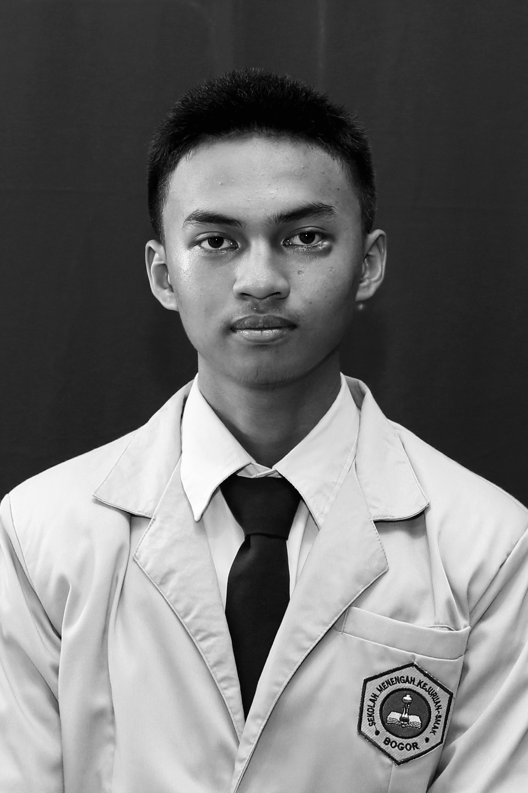

| Data Diri | Foto | |
|---|---|---|
| Nama | Muhammad Naufal Aiman |  |
| Jenis Kelamin | Laki-laki | |
| Alamat | Jl. Mayjend Sutoyo Km 56, Grogol, Cilegon, Banten. | |
| Tempat, Tanggal Lahir | Cilegon, 01 April 2004 | |
| Agama | Islam | |
| Status | Belum menikah | |
| Pekerjaan | Menempuh pendidikan | |
| Hobi | Berenang | |
Begitu banyak pengalaman yang saya dapatkan di masa pembelajaran jarak jauh selama pandemi Covid-19 ini. Diantaranya adalah menemukan metode belajar yang efektif dan efesien, memperbanyak waktu bersama keluarga, lebih mempererat anggota keluarga satu sama lain, dan dapat mengembangkan hobi saya bermain game dan musik. Banyak hal-hal baru yang saya pelajari saat masa quarantine ini.
Namun, ada juga pengalaman buruk yang saya dapatkan selama pandemi ini. Yaitu disaat belajar, banyak sekali distraction di sekeliling rumah sehingga saya sulit untuk berkomunikasi. Dan juga saya tidak dapat bertemu dengan teman sehingga melonggarkan tali silahturahmi. Saya berharap masa pandemi ini segera selesai karena saya merindukan hidup normal terutama kembali bersekolah tatap muka.